阅读词表
| 词条 | 拼音 | 类型 | 说明 |
|---|---|---|---|
| 殷墟 | yīn xū | site_or_culture | 晚商都邑遗址，甲骨卜辞的重要出土地。 |
| 妇好 | fù hǎo | person | 商王武丁配偶，甲骨文中著名女性军事人物。 |
| 盘庚 | pán gēng | person | 商王名，以迁都殷地著称。 |
| 族邑 | zú yì | concept | 以部族为单位聚居形成的城邑或聚落。 |
| 人祭 | rén jì | concept | 以人作为祭品的祭祀行为。 |
| 戠 | zhí | manual | 古文字，文中作为“職”的声符并解释为等待、待命。 |
| 水牛 | shuǐ niú | concept | 商人畜牧和祭祀中涉及的家畜。 |
| 笤帚 | tiáo zhou | manual | 扫除尘土的用具，文中用于解释“妇”字相关字形。 |
| 兕 | sì | manual | 古书所称犀牛一类的大型兽，文中指武丁追猎的野生水牛。 |
| 洹 | huán | manual | 洹水，即今河南安阳河。 |
| 台西 | tái xī | site_or_culture | 河北藁城商代遗址，文中作为商朝北方军事聚落。 |
| 窖穴 | jiào xué | concept | 地下储藏坑穴。 |
| 彐 | jì | manual | 汉字部件；另有xuě音，文中用于说明“帚”及“妇”的字形。 |
| 斫 | zhuó | manual | 用刀斧砍削；“轮扁斫轮”出自《庄子》。 |
| 廪 | lǐn | manual | 粮仓，文中指商王邑中的粮库。 |
| 卜骨 | bǔ gǔ | artifact | 用于占卜的兽骨。 |
| 殉人 | xùn rén | concept | 陪葬或随葬的人。 |
| 灰坑 | huī kēng | concept | 遗址中含灰土、废弃物或祭祀遗存的坑穴。 |
| 《合集》 | hé jí | 项目词典 | 《甲骨文合集》的简称。 |
| 九世之乱 | jiǔ shì zhī luàn | 项目词典 | 《史记》所记商代中期王室长期内乱。 |
| 偃师商城 | yǎn shī shāng chéng | 项目词典 | 商代早期城址，位于二里头以东。 |
| 华夏文明 | huá xià wén míng | 项目词典 | 在中国早期历史中逐渐形成和发展的文明传统。 |
| 甲骨卜辞 | jiǎ gǔ bǔ cí | 项目词典 | 商代刻写在甲骨上的占卜文字。 | 刻写在龟甲兽骨上的占卜文字。 | 刻写在甲骨上的占卜记录。 | 刻写在龟甲兽骨上的占卜辞句。 |
| 自然经济 | zì rán jīng jì | 项目词典 | 以自给自足为主的经济形态。 |
| 郑州商城 | zhèng zhōu shāng chéng | 项目词典 | 商代早期大型城址。 |
| 上甲微 | shàng jiǎ wēi | 项目词典 | 王亥之子，传说中为王亥复仇。 |
| 周文王 | zhōu wén wáng | 项目词典 | 周族领袖姬昌。 |
| 周方伯 | zhōu fāng bó | 项目词典 | 商王册封周族首领为方伯的身份。 |
| 周武王 | zhōu wǔ wáng | 项目词典 | 周发，灭商之君。 |
| 宫殿区 | gōng diàn qū | 项目词典 | 都邑中宫殿和王室活动集中的区域。 |
| 甲子日 | jiǎ zǐ rì | 项目词典 | 干支纪日中的甲子日。 |
| 盘龙城 | pán lóng chéng | 项目词典 | 湖北武汉附近早商城址，是商朝南方重要据点。 | 湖北武汉附近早商城址，文中作为商朝南方据点。 |
| 绿松石 | lǜ sōng shí | 项目词典 | 一种蓝绿色矿石，常用于装饰。 | 蓝绿色矿物，古代常作装饰嵌片。 | 蓝绿色矿物，古代常作饰物。 |
| 车马坑 | chē mǎ kēng | 项目词典 | 埋葬车马的陪葬坑。 |
| 逸周书 | yì zhōu shū | 项目词典 | 传世古书，保存若干周代相关材料。 | 保存周初传说和文献材料的古书。 | 保存周代逸篇和历史材料的古书。 |
| 上帝 | shàng dì | 项目词典 | 商周宗教中的最高神。 |
| 世俘 | shì fú | 项目词典 | 《逸周书》篇名，记周初俘获和献俘。 |
| 人牲 | rén shēng | 项目词典 | 被用于祭祀的人。 | 被用于祭祀或献祭的人。 | 被杀用于祭祀的人。 |
| 偃师 | yǎn shī | 项目词典 | 今河南洛阳附近地名，二里头遗址所在地。 |
| 先妣 | xiān bǐ | 项目词典 | 已故女性祖先。 |
| 八卦 | bā guà | 项目词典 | 由三爻组成的八种基本卦象。 |
| 分封 | fēn fēng | 项目词典 | 周初封邦建国制度。 |
| 卜辞 | bǔ cí | 项目词典 | 甲骨占卜后刻写或记录的辞句。 | 甲骨上记录占卜的文字。 | 占卜时刻写或记录的辞句。 |
| 周公 | zhōu gōng | 项目词典 | 周公旦，武王之弟。 | 周公旦，周初政治家。 |
| 商族 | shāng zú | 项目词典 | 商王朝建立前后的族群共同体。 |
| 商汤 | shāng tāng | 项目词典 | 商朝开国君主，传统记载中灭夏。 |
| 商王 | shāng wáng | 项目词典 | 商朝王。 |
| 图腾 | tú téng | 项目词典 | 族群崇拜并作为象征的动物、植物或自然物。 |
| 土著 | tǔ zhù | 项目词典 | 本地原有居民或族群。 |
| 埋祭 | mái jì | 项目词典 | 将祭品埋入地下的祭祀方式。 |
| 城邑 | chéng yì | 项目词典 | 古代有人群聚居、具有一定组织和防御功能的城镇聚落。 |
| 基址 | jī zhǐ | 项目词典 | 建筑物遗留下来的基础位置。 |
| 尚书 | shàng shū | 项目词典 | 儒家经典之一，文中引用《盘庚》篇。 | 保存上古政治文献和诰命的儒家经典。 |
| 征伐 | zhēng fá | 项目词典 | 出兵讨伐。 |
| 战俘 | zhàn fú | 项目词典 | 战争中捕获的人。 |
| 拖曳 | tuō yè | 项目词典 | 拖拉、牵引。 |
| 政体 | zhèng tǐ | 项目词典 | 政权组织和统治形态。 |
| 方伯 | fāng bó | 项目词典 | 商周时期受命统领一方的首领。 | 受命统领一方的首领。 |
| 族徽 | zú huī | 项目词典 | 族群标识，常见于商周青铜器铭文。 |
| 春秋 | chūn qiū | 项目词典 | 孔子时代相关的编年史经典。 |
| 武王 | wǔ wáng | 项目词典 | 周武王。 |
| 殉葬 | xùn zàng | 项目词典 | 以人或物随葬。 |
| 殷商 | yīn shāng | 项目词典 | 商朝后期文化和政权。 | 商代后期以殷墟为中心的商王朝阶段。 |
| 殷都 | yīn dū | 项目词典 | 商朝后期都城区域，今安阳殷墟一带。 | 商朝后期都城区域。 | 晚商都城，通常指安阳殷墟。 |
| 沦丧 | lún sàng | 项目词典 | 丧失、沦陷。 |
| 献祭 | xiàn jì | 项目词典 | 把祭品奉献给神灵或祖先。 | 向神灵、祖先等奉献祭品。 |
| 王权 | wáng quán | 项目词典 | 王的政治统治权力。 |
| 疆域 | jiāng yù | 项目词典 | 国家或政权控制、影响的地域范围。 |
| 直辖 | zhí xiá | 项目词典 | 由中心政权直接管辖。 |
| 祖乙 | zǔ yǐ | 项目词典 | 商王名，史书记载其迁都于邢。 |
| 神权 | shén quán | 项目词典 | 以神灵、祭祀权威支撑的统治权力。 | 以神灵或宗教权威支配社会政治生活的权力形态。 |
| 祭品 | jì pǐn | 项目词典 | 祭祀时献给神灵或祖先的物品。 |
| 繁衍 | fán yǎn | 项目词典 | 逐渐增多、传续后代。 |
| 纣王 | zhòu wáng | 项目词典 | 商朝末代王帝辛。 | 商末王，文中讨论其暴虐和人祭。 |
| 羌人 | qiāng rén | 项目词典 | 西方族群，常见于商代卜辞。 |
| 翦商 | jiǎn shāng | 项目词典 | 周人剪灭商朝的政治行动。 | 剪除商朝，文中为全书核心主题。 |
| 蛮荒 | mán huāng | 项目词典 | 荒远未开发。 |
| 贡赋 | gòng fù | 项目词典 | 向统治者进贡或缴纳的赋税。 |
| 车辙 | chē zhé | 项目词典 | 车轮压出的痕迹。 |
| 酋长 | qiú zhǎng | 项目词典 | 部落或地方共同体的首领。 |
青铜器词表
| 器名 | 拼音 | 类型 | 说明 |
|---|---|---|---|
| 戈 | gē | bronze_item | 古代横刃长柄兵器。 |
| 钺 | yuè | bronze_item | 大型斧形兵器或礼器。 |
| 缶 | fǒu | bronze_item | 古代大腹小口盛酒瓦器。 |
| 戚 | qī | bronze_item | 古代斧形兵器或礼器。 |
| 爵 | jué | bronze_item | 古代酒器，也引申为爵位。 |
章节导读札记
| 主题 | 札记 | 操作 |
|---|---|---|
| 暂无章节导读札记 | ||
用户札记
| 类型 | 页 | 内容 |
|---|---|---|
| 暂无用户札记 | ||
原书阅读器页 223原书物理 PDF 页 221印刷页 209
第十一章商人的思维与国家
商王朝留下了众多遗址、文物以及累累白骨，那么，这个身居华夏文明源头的王朝是如何运作的？商王如何解释自己的权力来源？他的臣民对此又是如何理解的？
商朝已经有了文字，即使按最严格的“文明”标准，它也完全符合。商代甲骨文和后世的汉字一脉相承，从未中断，这自然会给现代人释读甲骨文带来天然的便利，但也会有误导，容易让现代人以为商朝的文化和政体很容易理解。其实，它和西周之后的华夏文明很不一样，和战国之后的中国更是判若云泥。
假设一位战国时代的思想家，如孟子或者荀子，亲身访问商朝，其所见所闻将会彻底颠覆那些从史书中获得的认识。现代考古学也只是揭开了真实商代的一个小角，不仅如此，如何解读考古发现甚至复原真正的商文化，却是更加困难的工作。
冷酷而暴力的世界观
殷墟虽然出土了十多万片甲骨卜辞，但它们都是商王针对特定问题的占卜记录，并没有宏观的自我陈述。相对而言，《尚书•盘庚》记载的盘庚王的迁都讲话在这方面有不可替代的价值。
盘庚的讲话中，频频出现“德”字，似乎商人已经有了一整套道德观念。其实，商人的“德”和后世的意思还不太一样，它不是客观的行为规范，而是具体的“给好处”之意。王的“德”是给臣民好处，它的反义词是惩戒，是“罪”和“罚”，两手都不可少：“用罪伐厥死，用德彰厥善。”[[fn:1]] 直到周公在西周初期发展出“敬德”的理念，“德”才逐渐被当作一种通行的价值观。
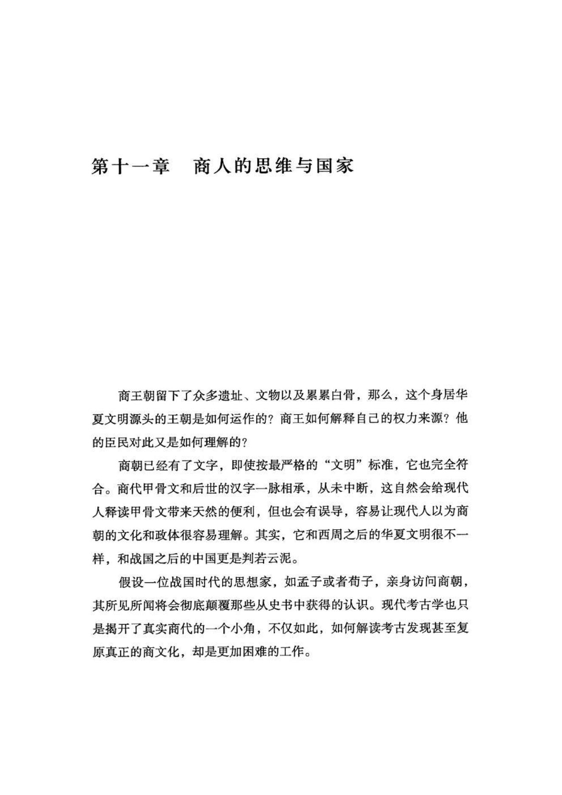
原书阅读器页 224原书物理 PDF 页 222印刷页 210
在商人的眼里，世界是冷酷的，充满暴力、杀戮、掠夺和不安全。他们不认为鬼神有明确的善恶观念，或者说，商人本没有明确的善恶观念，自然也不会想象鬼神能有。商人认为鬼神会随时、随意给任何人降下灾难，大到灾荒和战乱，小到生活中的各种不如意，都有鬼神在背后操纵，即便是商王也难免。
为获得鬼神的恩宠，或者不降祸，商王一直在向鬼神奉献大量祭品。但这仍不能保证有效。在甲骨卜辞中，商王频频占卜询问：“帝其降我旱？帝弗害年？唯帝令作我祸？唯帝肇王疾？帝其作我孽？ ”翻译成白话就是，上帝最近会不会降下旱灾？会不会损害年成？上帝会不会保佑我？会不会让某个异邦起兵攻击我？会不会让我生病？
除了上帝和大大小小的自然神，直接影响商王生活的是天界的列祖列宗。但凡商王有任何不适，包括牙痛、耳鸣或者噩梦，都要先预判是哪位先王或先妣在作祟，然后用占卜确认，并决定举行哪种祭祀，以消弭祖先祖神的愤怒。
上帝和先王不仅需要人牲在内的各种祭品，还垂涎着世间的活人，包括商王的夫人。武丁王最倚重夫人妇好，但她不幸早逝，于是武丁王占卜询问：“是上帝要娶妇好吗？还是唐（商汤）、大甲、祖乙、父乙（武丁之父小乙）要娶妇好？ ”
最后，占卜的结果刻在了甲骨背面，但似乎并不是上面列举的几位，而是商族建立王朝之前的第八代酋长上甲微。[[fn:2]]
惟帝取妇好？（《合集》2637）
惟祖乙取妇？惟父乙？（《库》1020）
惟唐取妇好？惟大甲取妇？惟祖乙取妇？妇好有取上。王占日：上惟甲。（《合集》2636）
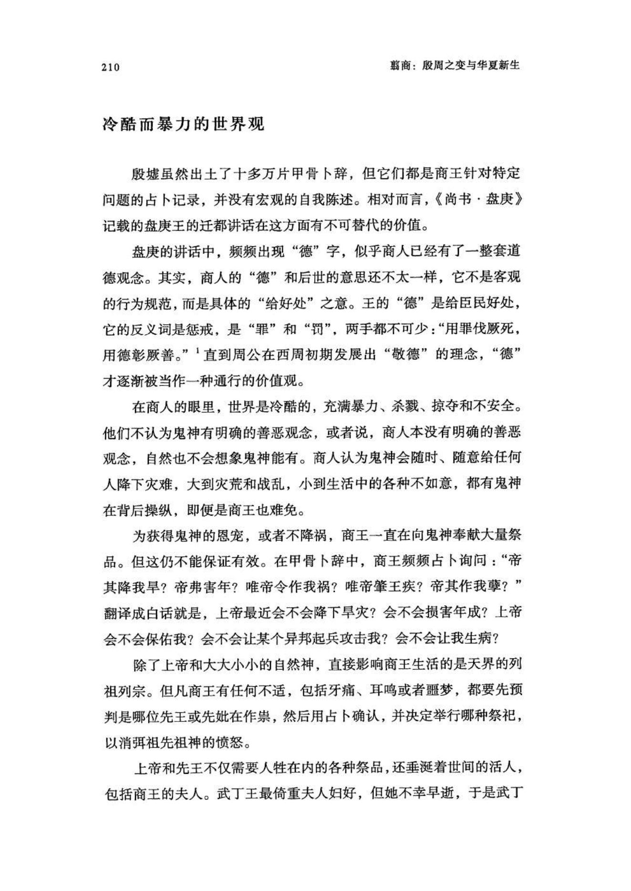
原书阅读器页 225原书物理 PDF 页 223印刷页 211
商人对世界秩序的理解，也表现在他们创造的甲骨文里。甲骨文里最常见的是和杀人有关的字，其意思不仅是杀戮，更是仪式化的杀人献祭。
戈，是商人使用最多的兵器，甲骨文写作（甲骨文）。而以戈为部首，又有一系列会意字，如伐，甲骨文写作（甲骨文），在甲骨卜辞中出现极多。用戈砍一个人，是（甲骨文）；砍两个人（象征多个），则是“歼”，甲骨文写作（甲骨文），至今繁体的“殲”字还保留着原字形。殷墟祭祀区出土的大量身首分离的尸骨，大都是伐祭的遗留。
殷商的人祭多用羌人，可能是为书写方便，占卜师甚至给“伐羌”专门造了一个字，甲骨文写作（甲骨文），字形是用戈砍一名羌人。
职务的“职”，甲骨文写作（甲骨文），隶定为戠，繁体的“職”即从此来。戠的字形是“戈” + “石”，显然，石头是磨砺戈刃用的。在卜辞中，这个字的意思是等待的待，因为磨砺戈是为了砍杀，本身就是个需要等待的过程。卜辞中经常出现“戠，亡尤”，意为“等一等，不用担心”。由此，又引申为“职务”的“职”字，因为职务本身也是待命状态。
戍，甲骨文写作（甲骨文），像一个人扛着戈，代表出征和戍卫。戎，甲骨文写作（甲骨文），是“戈”和“盾”两个字的组合，意为战争。西部周族语言中的“戎”字有野蛮人之意，如“戎狄”，被后世一直沿用，但商族人的戎字本无此意。
翦，甲骨文写作（甲骨文），像一撮羽毛装饰刃部的戈，意为攻占和普遍性的杀戮。羽毛的意义不详，也许商人崇拜鸟，就将鸟羽作为神圣的标志。但在甲骨卜辞里，不仅有商人“翦”别族，蛮族也可以“翦”商的城邑。后来的周人史诗把他们的灭商事业称为“翦商”，也是取其宏大之意。
〔按语：翦商的由来。〕
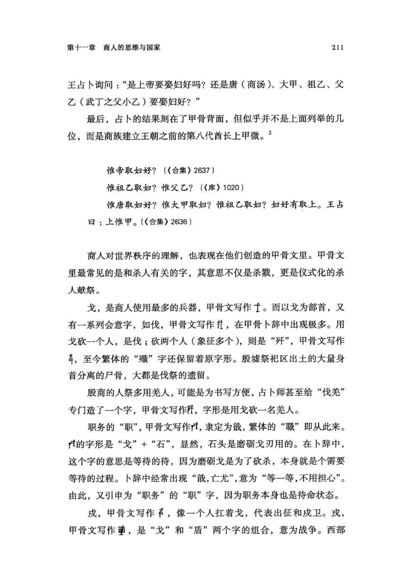
原书阅读器页 226原书物理 PDF 页 224印刷页 212
除了大量“戈”部的字，类似兵器造型的还有天干的“戊”，甲骨文写作（甲骨文）；地支的“戌”，甲骨文写作（甲骨文）；甚至第一人称的“我”，甲骨文也是写作（甲骨文）。由此，便又造出一些常用字，如岁（歲）、义（羲）、咸、成等，其本意是什么已经很难判断，但肯定都和杀伐有关。甲骨文的“王”字，甲骨文作（甲骨文），一把战斧（钺）的刃部，象征军事征伐是王专有的权力。[[fn:3]]
除了对敌人（外族）的杀伐，在商人自己的生活里也不乏暴力。如“教”字，甲骨文写作（甲骨文）：右边是攵，手拿一根棍子；左上是“爻”，一种用摆放草棍计数的方式；下面是“子”，也就是幼儿。顾名思义，用棍子督促孩子学习算数，就是教。爻字可能让人联想到八卦，不过早期的爻还没有八卦占算之意，只是单纯的算数，但更晚的八卦的确是从草棍算数发展来的。
〔按语：结绳记事〕
手拿棍子的部首，不仅有“攵”，还有“攴”，都表示威胁和驱赶之意。此外，还有手拿战锤的“殳”部，写作4 ,比如甲骨文燃，就是一种用棍棒击打人牲头部致死的祭祀方式，在祭祀北风之神时会用： "［北方曰］伏凰曰用。"（《合集》14294）
甲骨文是标准的“男性文字”，而且是龙山文化之后部落旧习未褪时代的男人们创造的文字。那时还没有后世人理解的王朝秩序，部族之间的掠夺和杀戮司空见惯，嗜血的诸神主宰着蛮荒大地。
当然，甲骨文里也有女人的形象。“女”，甲骨文写作（甲骨文），像一个跪坐姿势的女子，以驯服的造型和较大的胸部为特征。手抓一名女子，则是“妥”，甲骨文写作（甲骨文），一种用女子献祭的方式。“母”，甲骨文写作（甲骨文），在女字的胸前加两点，突出其哺乳的特征。
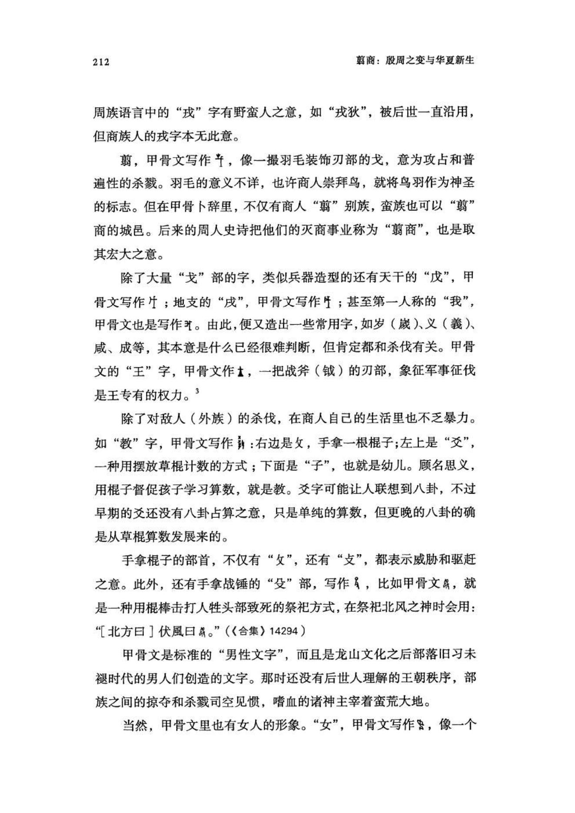
原书阅读器页 227原书物理 PDF 页 225印刷页 213
商人称尊贵的女性为“妇”，如著名的商王夫人“妇好”和“妇井”。“妇”字的部件，甲骨文写作彐，一把扫地的笤帚，即“帚”字，由此可见商人默认女性的职能是做家务，用笤帚即可代表妇女。至于当时和女人有关的工作，如纺织、缝纫和制衣，在甲骨文里很少有相关的字，看来它们不属于制造、使用文字的男人（武士）关注的内容。
当然，王的夫人（王后）会很有权势，经常主持战争和祭祀，但这并不代表商朝总体的性别秩序。
外来技术与殷商中兴
早商的扩张，主要依靠的是青铜技术；而到晚商-殷墟时期，商人又获得了一种对王朝至关重要的技术：马车。
双马拉的双轮轻型战车是如何进入商朝，或者说如何进入东亚的，至今还是个历史谜团。这种技术来自五千年前中东地区出现的牛拉、驴拉轮式车辆，以及黑海北岸的草原人驯化的马匹。三千多年前，驾驶着马拉战车的“印欧人”四处扩散，远及南亚次大陆和希腊半岛，比如，古印度梵文史诗或荷马史诗中就曾多次歌颂这种英雄的座驾。[[editor-fn:1]]
除了驾车，骑马也是快速的交通方式；不过，在距今4000— 3000年前，人类还很少有骑马的尝试。这背后的原因很难说清楚，也许有生活习俗的惯性，也许有马匹品种进化的因素，比如，越是古老的葬马坑，马的个头往往越小，可能并不适合长途骑行。在上古时代，马拉双轮战车是唯一可以提升陆地交通速度的工具。
〔编者注1〕马车的起源现在有争议。
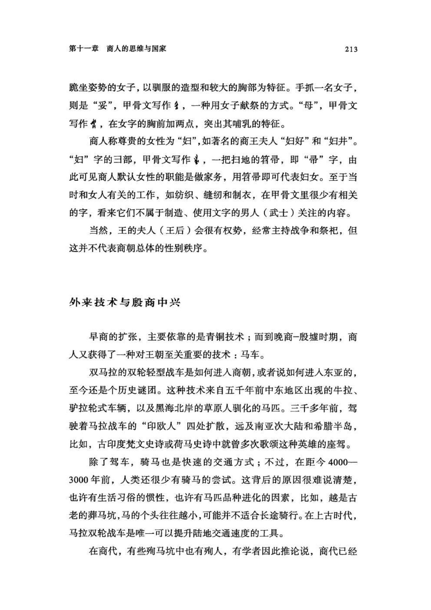
原书阅读器页 228原书物理 PDF 页 226印刷页 214
在商代，有些殉马坑中也有殉人，有学者因此推论说，商代已经有了骑马行为和骑兵。但这种推论未必成立，商人很擅长用象形原理造字，如果商代已经有骑马行为，按理说他们应该会造出人骑马造型的字，但目前发现的甲骨文中完全没有这种字。
和人力车辆、牛拉货车不同，制造双马拖曳且高速奔驰的轻车，需要很高的制造工艺。不仅如此，驯化马和驾车的技术也非常复杂，都不是一朝一夕能发展出来的。战国时期的《庄子》有“轮扁斫轮”的寓言，说这位工匠制造的车轮可以用于高速马车，可见其技术细节之精妙。
在商代前、中期，从未发现马车的踪迹，只有人力推拉的小型双轮车辙痕。夏-二里头和商代前中期遗址中几乎从未发现马骨。华北北部有些族群遗址中发现过马的骨头，但也只是将捕获的野马作为食物，从没有驯化马的迹象。
到盘庚王迁都殷地后半个世纪，武丁在位时期，却忽然出现了成熟的双马拖曳双轮战车，比如，殷都宫殿区乙区埋祭了四辆双马拉战车，武丁的夫人妇好的墓中有六件驾驭马车用的铜制弓形器，武丁的甲骨卜辞中也频频出现马车。可以说，马车在殷商出现得非常突然，而且似乎从一开始，技术就已经完全成熟。这很可能是外来输入。
也许是某个中东地区的马车族群进入了中亚和蒙古大草原，又南下穿过燕山，在山西或河北地区遇到了商族人，然后，商人迅速掌握了驾驭战车、繁育马匹和制造车辆的技术。另一种比较缓慢但可能性更大的方式，则是马车技术自西向东，在若干个族群之间经历了“接力”式的传播，最终到了商人手里。
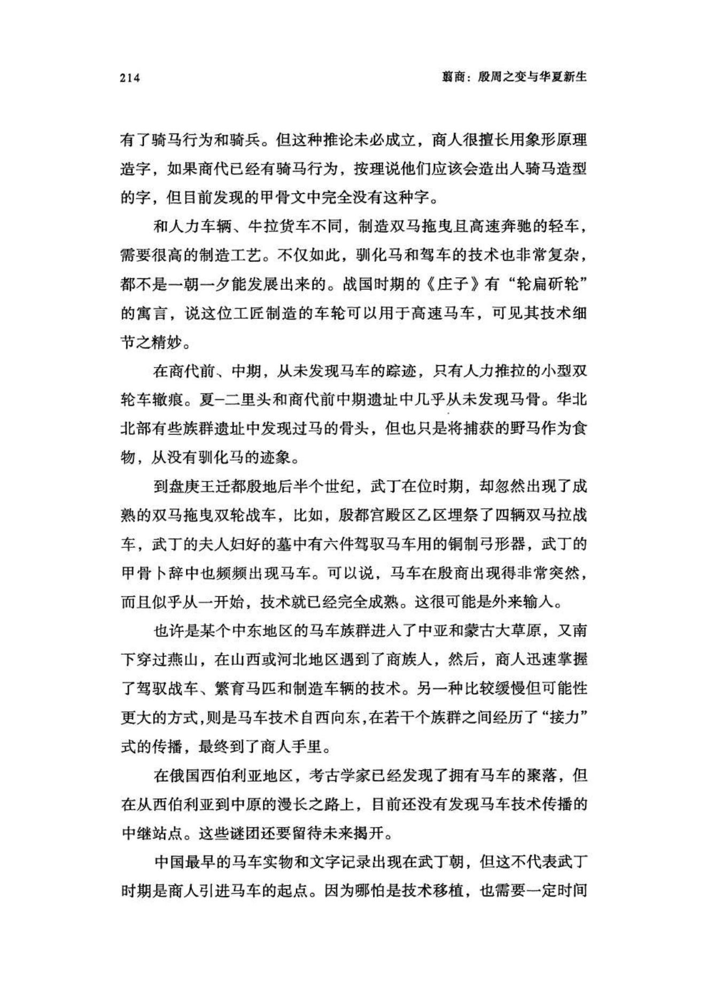
原书阅读器页 229原书物理 PDF 页 227印刷页 215
在俄国西伯利亚地区，考古学家已经发现了拥有马车的聚落，但在从西伯利亚到中原的漫长之路上，目前还没有发现马车技术传播的中继站点。这些谜团还要留待未来揭开。
中国最早的马车实物和文字记录出现在武丁朝，但这不代表武丁时期是商人引进马车的起点。因为哪怕是技术移植，也需要一定时间的学习和积累。这个过程可能需要数十年乃至上百年。由此，在武丁的伯父盘庚王时期，商人应当已经引进马车技术。倘若真是如此，盘庚北渡迁殷就很可能是为了更方便地引入和繁育马匹。
在商代，中原的气候比较湿热，本不适合马的繁育，但殷地紧邻太行山，山间草甸相对高寒，不仅适合养马，而且也更方便从冀北和晋北草原地区购买马匹。商人虽然习惯的是中原湿地环境，但殷都还属于他们可以接受的足够靠北的地域，这样，传统的水牛以及新来的战马均可兼顾。
由此，在殷商早期的石家庄台西商人据点发现的那块马骨，也可以获得解释：台西商人聚落虽还不够配备马车的资格，却是北方驯化马匹销往殷都的所经之路，所以不排除个别马匹有可能病死在这里，从而变成灰坑中的骨头。
殷商阶段，马车还不太多，还不足以改变陆地战争形态，但它有更重要的价值，这便是作为通信的手段和王朝上层人物的交通工具。
马车可以加快殷都和数百里外的商人侯国间的信息沟通，而且侯国的君长们也可以更方便地往返都城，朝见商王。当然，这也有利于他们保持商族特性，避免因终年僻处一隅而逐渐被异族同化。而且，驾乘昂贵而罕见的马车奔驰，本身就是一件荣耀之事，不仅能让沿途的化外异族惊惧，车上的商人贵族也可以获得充足的优越感。这也是王朝精英认同的一部分。
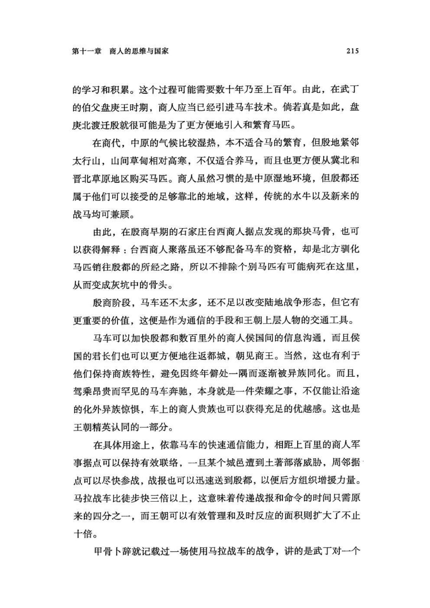
原书阅读器页 230原书物理 PDF 页 228印刷页 216
在具体用途上，依靠马车的快速通信能力，相距上百里的商人军事据点可以保持有效联络，一旦某个城邑遭到土著部落威胁，周邻据点可以尽快参战，战报也可以迅速送到殷都，以便后方组织增援力量。马拉战车比徒步快三倍以上，这意味着传递战报和命令的时间只需原来的四分之一，而王朝可以有效管理和及时反应的面积则扩大了不止十倍。
甲骨卜辞就记载过一场使用马拉战车的战争，讲的是武丁对一个叫宙的部族的征讨。
卜辞上说，在癸丑日，一名叫“争”的占卜师为武丁王卜问：从今天到丁巳日，我军（在哪一天适合）攻击宙人？
武丁王解读说：丁巳日不合适，要到下一个甲子日。
十一天之后的甲子日，龟甲刻上了战斗结果：癸亥日，战车没投入战斗，从这天夜里到第二天的甲子日，（可能因为战车投入使用）确实消灭了宙人。
宙地环境应当比较平坦，适合战车奔驰作战。武丁王在占卜中否决了在前面四天进行决战，应该是在等待战车集结。
有学者认为，宙地在山西南部的长治一带，从殷都到这里需要翻过山岭。商人的战车可能需要拆解，然后用马驮运，翻过山岭再组装起来投入战斗，所以商王的主力需要多等待七天。至于这场战斗投入了多少战车，卜辞中没有记载，估计最多有数十辆。
宙应该是个不大的部族，在殷墟卜辞中出现的次数不多。这场战斗可能是武丁王比较集中的一次使用战车的尝试，其卜辞用异常粗大的笔画刻在了一片龟甲的正面，说明武丁王对战事非常关心——与此同时，武丁可能也在发动对“缶”部族的战争，但相关占卜却只是用细微小字刻写在“宙”的边缘。二者差别极大。这应当不是因两个敌对部族的实力区别，而是对战车实验的强调。
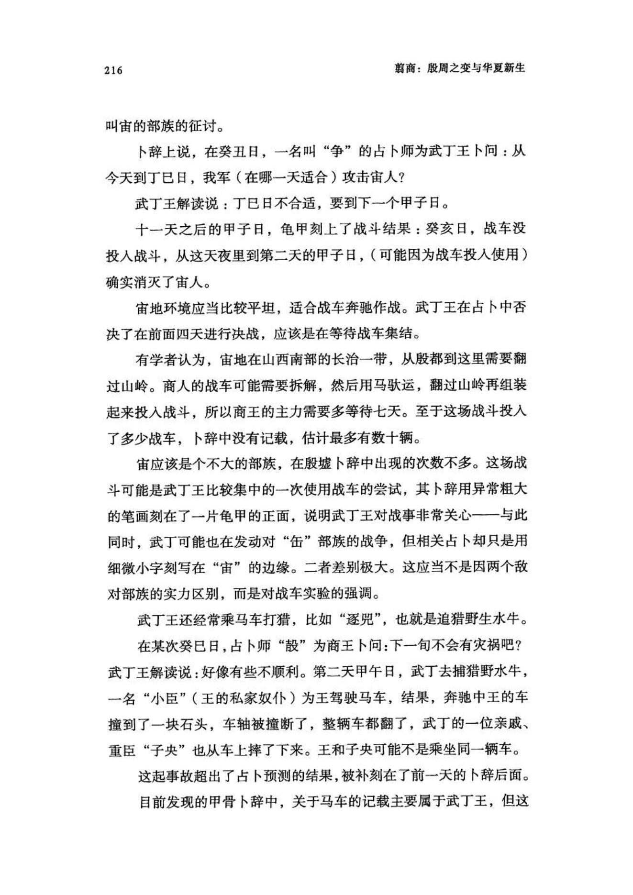
原书阅读器页 231原书物理 PDF 页 229印刷页 217
武丁王还经常乘马车打猎，比如“逐兕”，也就是追猎野生水牛。
在某次癸巳日，占卜师“骰”为商王卜问：下一旬不会有灾祸吧？武丁王解读说：好像有些不顺利。第二天甲午日，武丁去捕猎野水牛，一名“小臣”（王的私家奴仆）为王驾驶马车，结果，奔驰中王的车撞到了一块石头，车轴被撞断了，整辆车都翻了，武丁的一位亲戚、重臣“子央”也从车上摔了下来。王和子央可能不是乘坐同一辆车。
这起事故超出了占卜预测的结果，被补刻在了前一天的卜辞后面。目前发现的甲骨卜辞中，关于马车的记载主要属于武丁王，但这不等于武丁时期使用马车次数最多。从考古发掘可见，武丁之后，马车数量一直在增长，到殷商晚期，车马坑的数量大大超过了武丁时期，不仅王室祭祀、殉葬要埋车马，殷都内外越来越多的商人贵族也开始流行殉葬车马。
《合集》6384正（图）
癸丑卜，争贞：自今至于丁巳，我翦（（甲骨文））宙？王占曰：丁巳我毋其翦（（甲骨文 同前）），于来甲子翦（（甲骨文 同前））。旬有一日癸亥，车弗翦（（甲骨文 同前））。之夕向甲子，允翦（（甲骨文 同前））。
《合集》10405记载的武丁王马车事故（图）
癸巳卜，（异体字， 待查）鼎（贞）：旬亡祸？王（占）曰：乃兹亦有咎，若（异体字，待查）。甲午，王往逐兕，小臣叶车马，（石我），奂（坏）王车，子央亦坠。
因此，殷商晚期能够投入作战的马车数量应该已经远超武丁王时期，可能达到数百辆规模。至于为什么武丁之后的甲骨卜辞中少见马车记载，很可能是出土甲骨数量不均衡所致：武丁时期的甲骨侥幸保存下来的较多，后世诸王的则较少，这是考古工作难以避免的偶然性。
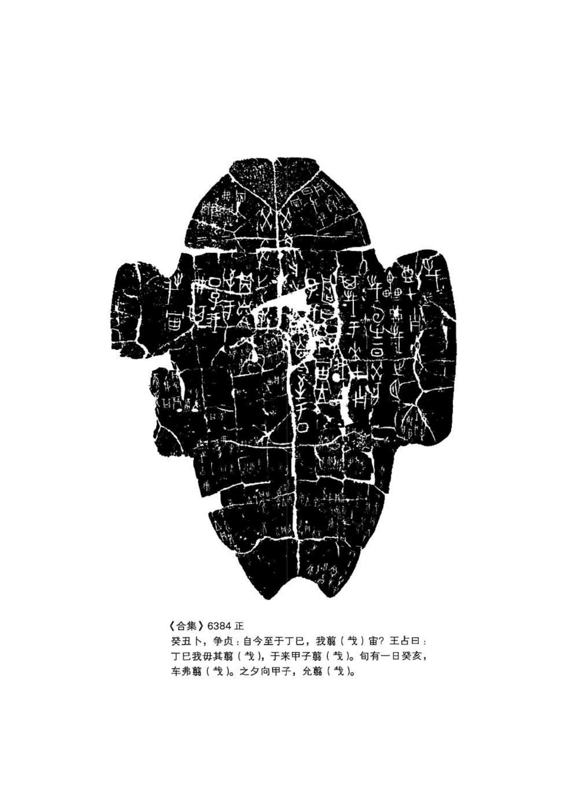
原书阅读器页 232原书物理 PDF 页 230印刷页 218
大约和盘庚王迁往殷都同时，在中东地区，古埃及和古赫梯两国发生了一场著名的大战——卡迭石战役，双方投入的马拉战车均超过一千辆。这次战役被古埃及文和赫梯人的楔形文字记录了下来。两相比较，商代的战车数量应该还达不到这种规模。
〔按语：楔形文字存争议〕
商人社会的基本单位：“族”
商王的权力来自神界，貌似对人间的一切都有生杀予夺之权，但现实呈现得更为复杂。
早商时代的考古资料较少，文献史书又不可靠，直到发掘出垣曲和偃师商城的巨大仓储建筑群，我们才得以窥见早商王朝巨大的控制力。至于这种控制力是如何实现的，目前还无法回答。
经历衰落和模糊不清的中商后，晚商殷墟时代的信息开始多了起来。殷墟没有发现早商那种超级仓储建筑群，从甲骨卜辞等各种材料来看，殷商并没有现代人熟悉的各种政府体系，如完备的国家机构和层级政府等。商人社会的基本单位是血缘关系的“族”，甲骨文写作不，字形是战旗和一支箭，直观表现了它的战争属性。商人的族，可以理解成宗族、部族或氏族，每个商人宗族都有自己的领地，统治着耕作的土著农民。
每个族有自己的“邑”，即农业居民点。相对而言，在殷都范围内，因为人多地少，族邑很密集。邑未必有级别高低的统属关系，商王都城虽然称为“大邑商”，但在字面上也只是个较大的邑而已。
那些都城之外的部族可能占地数十里，算得上一个小邦国，它们的主人（族长）可能有“侯”的爵位，统治区就是侯国。“侯”，甲骨文写作（甲骨文），望楼下面的一支箭，意为担任警戒任务的哨所，所以分封在边地、保卫商朝的部族首领就是侯。在甲骨文里，侯只能是商族人，投靠商朝的异族方国首领不可能被称为侯。只是商朝以后的人已经不了解这种分别。
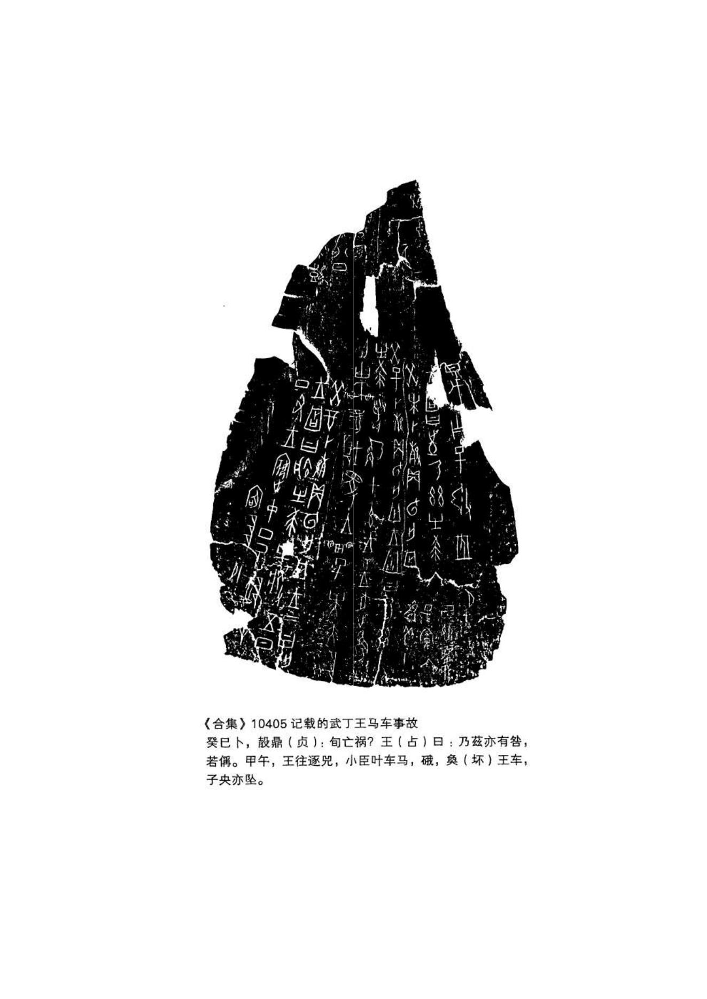
原书阅读器页 233原书物理 PDF 页 231印刷页 219
商人的族不仅是血缘家族，也是政治和经济单位，有自己的家族武装力量，还可以有畜牧业、渔业、手工业和商业。有些族的某种产业较为发达，如铸铜或制骨，或者贩运某些商品，但他们仍有自己的农庄产业，自然经济占很大比重。
从神权法理上说，商王可以剥夺任何一个族长的土地和属民，但在现实中，这种情况极少，除非该族长有明显的罪错。在商人生活中，传统习惯法很重要，王不能随意介入各部族的事务。
有些族是历代商王的王子们繁衍出来的，由此获得一块封地和上面的农夫，或者是从王室直辖区分割出来的，或者是新征服的，从而建立自己的族邑。
还有些族更古老，在商朝开国之前或者在灭夏的过程中，和商汤王建立了同盟或依附关系，从而在商朝建立后，被吸纳、同化到广义的商族之中。从商初考古来看，当时的加盟者非常多元，分别来自岳石、下七垣、辉卫等文化。在殷墟时代的卜辞中，商王会祭祀一些来自商王家族之外的“大臣”，如伊尹、巫咸、黄尹，这些人应当是早期加盟商族的各部落酋长。随着商王家族繁衍得越来越多，这些老资格的加盟族也就变得疏远了，但仍属于商的政治和文化圈。
商人的族在历史文献里的记载很少，但在考古发现里很多。比如，商王的甲骨卜辞经常会命令某个人去外地征战，却没有说拨给他多少兵力，说明此人是族长（侯国之君），理应带自己的家族武装出征，不需要专门写出。
卜辞里常出现“多子族”出征的记载，“子”特指商王家族的子弟，“多”是众多之意。王族子弟是和商王亲缘最近的，所以他们的家族武装也比较好。不过，一位王子繁衍几代之后，会形成一支独立的族，就不再属于“多子族”序列了。
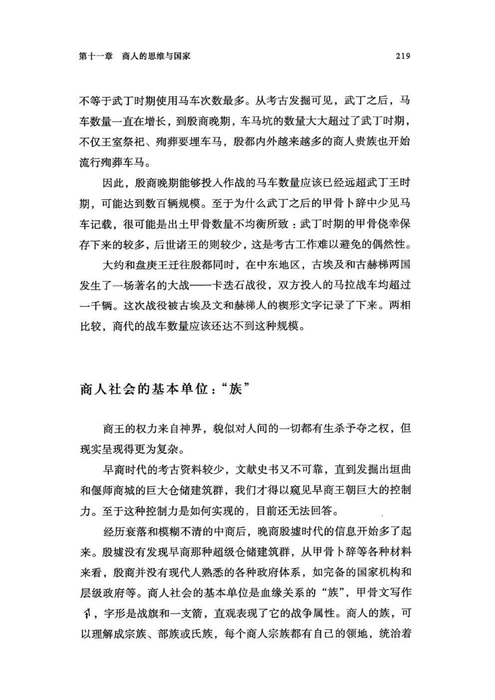
原书阅读器页 234原书物理 PDF 页 232印刷页 220
殷墟范围内的各族邑分布图，圆圈中的族邑符号来自出土青铜器上的“族徽”[[fn:4]]（图）
商代青铜器上的部分族徽符号[[fn:5]]（图）
商代贵族重视青铜器，有些礼器和兵器上会铸造主人的名字或宗族图腾（族徽）。一旦家族繁衍扩大，往往会分成几个不同的家支，从而族徽也会产生相应的变化，比如，加上一些小符号以区别。
商人以族为基本社会单元，这在墓地上表现得非常明显。正所谓聚族而居，聚族而葬，族墓地一般排列有序，族长与同族成员葬在一起，位于靠前或居中较尊贵的位置，一般不会脱离族人单独埋葬。男性族人往往有兵器随葬。族墓地的成员，虽然彼此之间贫富差距可能较大，但都享有同一块墓地，出土的青铜器上也往往有同样的族徽。那些被统治的农奴不可能葬入主人家族的墓地，除非作为殉葬人。
在政治、经济和军事上，商人的“族”有很大的独立性和世袭性。有些外地的族也是侯国，这属于“分封制”或“封建制”的社会规则。其基础原理是，因社会发展程度低，交通和通信手段落后，很难采用官僚制的直接管理方式，故而王权只能承认各商人部族或家族世袭的权力结构，遵循传统习惯法中的权利和义务原则。商文化有残暴血腥的一面，但内部的社会又是分权运行的。
王权与家族分封制
由于社会以族为基本单位，没有完备的政府体系，也就没有赋税和兵役制度。殷商王室和朝廷的开支不是靠在王朝境内普遍征税，而是由王室自己的产业承担。贵族们会向商王进献各种物品和人员，但没有量化要求。甲骨卜辞中有各种贵族向商王进献的记录，如牛、羊、犬、战俘、奴隶、玉石、甲骨、贝和盐（卤）等，但从未提及有额定的赋税指标。
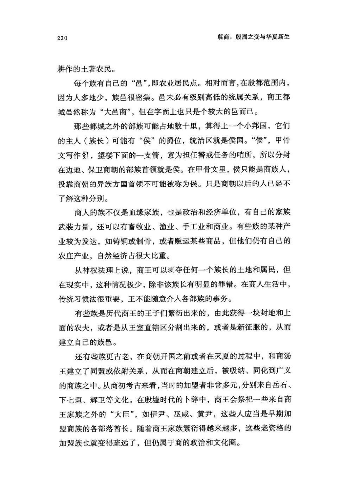
原书阅读器页 235原书物理 PDF 页 233印刷页 221
这种规则之下，商王需要直接管理的王朝事务比较少，其最重要的事务是组织祭祀和战争，而商人各宗族则承担提供祭祀贡品和战争兵员（自带装备）的任务。所谓：“国之大事，在祀与戎。”这正是家族分封制而非官僚帝制时代的规则。
甲骨卜辞对祭祀的记载都很简单，一般只记载王的参与，很少记载其他的参加者。但在实际操作中，在殷都的相关宗族应当都会有代表出席。比如，祭祀某位先王时，这位先王后人形成的各宗族应该都要派代表并携带祭品参加。越是祭祀古老的先王，参与者就越多。祭祀商王家族之外的先代人物，或者河、岳等自然神，相关部族应该也会派员参加。
一旦发生战争，商王会直接命令某个或某几个宗族参战，有时则会集结编组。比如，“登旅万”[[fn:6]]，意思是召集一万人的军队，这应当是先确定需要的兵力总数，然后向各宗族分摊兵员。有时还要编组成三个支队，所谓“王做三师，左中右”[[fn:7]] 从春秋时代的战事来看，各家贵族的武装不会被打散，只是被编组到更大的作战单位中。各宗族参战，既是对王的义务，也是抢掠战利品和人口的机会。
因为没有税收体系，所以商王的宫廷开支主要靠王室自己的产业。商王拥有很多邑（田庄），由王任命的管家（小臣）经营，收获物属于王室私产。这些王家田庄可能分布在殷都附近，乃至周边数十、上百里内。殷墟卜辞中经常有祈祷风调雨顺的内容，这应该主要是商王在关注自家田庄的收成。
商王也有放牧牛羊的牧场。牧工“刍”多是战争中捕获的奴隶，常有逃亡的记录。王家的邑设有粮库（廪），商王时常会派人视察。王宫内还有铸铜作坊，但规模不如宫外的大。关于商王的田庄如何经营，虽然甲骨卜辞中有些王命令众人耕作和开垦的记录，但更细致的管理工作应该是由基层小吏来做的。
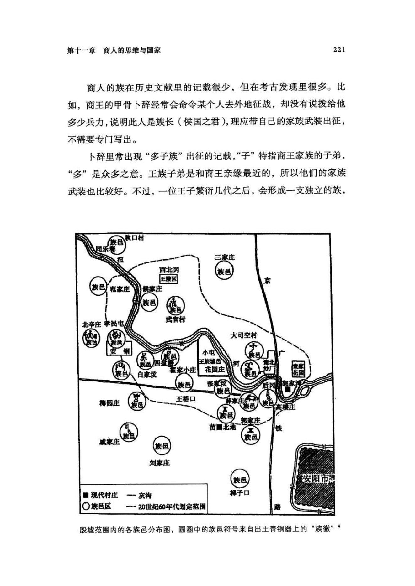
原书阅读器页 236原书物理 PDF 页 234印刷页 222
殷墟的考古还提供了一些颇难解释的现象。比如，商王宫殿里储存着大量的石头农具。在甲九宫殿基址旁边的窖穴E181中，出土收割用的石刀444件；[[fn:8]] 此外，宫殿区的“大连坑”中有石刀过千，石镰也有多处集中出土，共3640件。[[fn:9]] 这些石刀和石镰应是集体保存的农具，多有使用磨损痕迹，使用人可能是王室蓄养的奴隶。也就是说，这些人连属于自己的农具都没有，生存状况接近家畜。
E181窖穴的埋藏物极多，除了石刀，还有大量卜甲、卜骨、小件铜器、大量绿松石块，以及金箔（原报告称为“金页”）和金箔制作的“金花”。[[fn:10]] 这都是王室才会有的财物，看来王室和奴隶们居住的地方相隔并不远。
需要注意的是，只有殷墟王宫区发现有大量集中存放的石头农具，其他任何商代聚落，包括殷墟范围内的，都没有类似发现。这意味着在王室之外，各商人族邑并不采用标准的“奴隶制”劳动形式，而是由各家农奴自己制备农具。
那么为何只有王室使用这种野蛮且低效的生产方式？这也是一个历史谜团。
在以“族”为基本单位的社会结构中，商王朝内部的阶级差异和族群差异往往混杂在一起。都城及周边是商族人最为集中的地区，但也会有各种来历的贱民部族，以及商人贵族拥有的奴隶。这些奴隶来自边地战俘，随时会被用来献祭，只是我们还很难确定奴隶所占的人口比例有多少。
离开都城越远，各地土著人群和商人的语言、风俗差异就越大。他们多数被本地的商人宗族统治，属于人身权受限制的农奴。在商朝势力的外围，土著人群开始有自己的首领和部落组织，他们往往要接受邻近的商人侯国的统治，为侯国缴纳贡赋和服劳役。
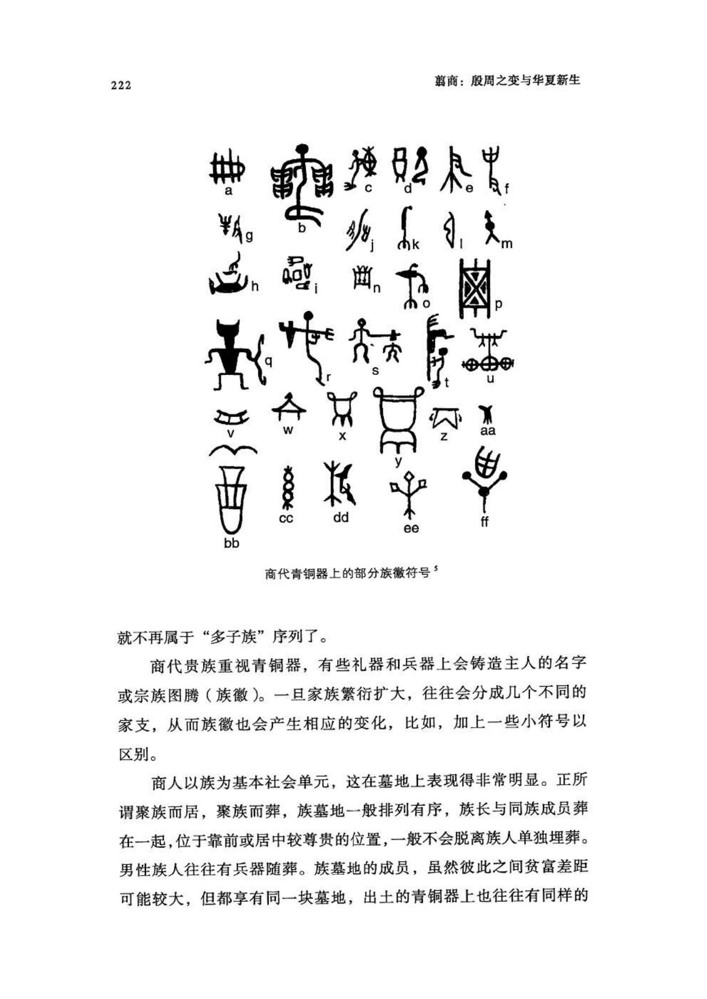
原书阅读器页 237原书物理 PDF 页 235印刷页 223
这些异族首领，被称为“伯”，甲骨文写作（甲骨文），其来历不详，和“百”音形近似，有可能是商人习惯认为异族头领都是百人规模的领导，但实际上也有大得多的，堪称“方国之君”。
“伯”并非商族人。比如，甲骨卜辞中常出现的“羌方伯”，指的就是羌人方国的首领。周族的首领，则是“周方伯”。《史记》记载，周文王曾被商纣王任命为“西伯”。这个称呼是有所依据的，只不过在周灭商后，后人已不了解“伯”在商文化中的意义了。
〔按语：西伯利亚即是周文王的利亚。〕
异族方伯不一定臣服于商朝，有些还自恃险远，长期和商朝敌对。商朝亦经常征伐这种异族方国，并用捉获的方伯首领献祭，尤其在殷商后期，商王对此更是重视。可能商王认为，人牲的地位越高，作为祭品的价值就越高。
甲骨卜辞显示，长寿的武丁王经常亲征异族地区，特别是西部的羌人（今山西和陕西地区的土著居民），并用羌俘献祭。武丁王的卜辞经常记载献祭人牲的数量，相比之下，武丁之后的八位商王都没有这么活跃，这很可能是因为那时的献祭人牲已越来越依靠边地的侯或者臣服的伯来提供。但亲征异族一直是商王的荣耀之举，每一位商王都必须履行，以证明自己是合格的王者。
〔按语：生活条件好就长寿〕
商王有一种军事征伐的仪式，名“步”，甲骨文写作（甲骨文）或（甲骨文），字面意思是步行，可能是指商王全副武装带领部队行军。甲骨卜辞中有大量王“步”的记载。在殷都时代，商王行猎或出征一般会乘坐马车，但“步”这种古老而威严的仪式一直存在。
在少数情况下，比如身体不适，商王会指定某个贵族代替自己履行“步”的仪式。卜辞中从来没有其他人自行“步”的记录。在周族崛起时，周人也学习了“步”的仪式，比如，有些文献就记载过周武王“步”而行军，和甲骨卜辞很相似：“王乃步自于周，征伐商王纣。”（《逸周书•世俘》）
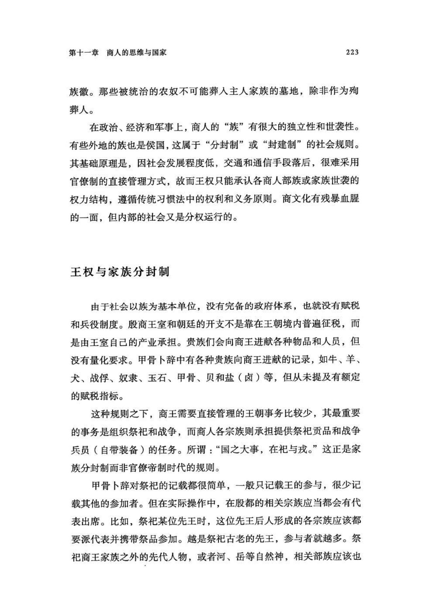
原书阅读器页 238原书物理 PDF 页 236印刷页 224
被异族同化及传统沦丧的危险
凭借独步天下的青铜技术，早商王朝曾经扩张到无以复加的程度，最典型的例子，便是长江畔的盘龙城商城；但早商的迅猛扩张，也蕴含着未知的风险。
军事上，远方的殖民城邦虽然可能足以自保，但毕竟和王朝腹地山河悬隔，身处异族土著的包围之中，由此，商人征服者难免和当地人互相侵染、同化，从而丢掉商人的精神内核——勇武和人祭宗教，甚至接受诡异的异族宗教。这是盘龙城发生过的教训。更不可容忍的是，南土的异族文化还向郑州都城倒流，污染商朝王室，引发了王朝内战——九世之乱。外来精神污染虽然最终被肃清，但早商的扩张成果也大半化为泡影。
商朝不可能被武力摧毁，却可能会因异族熏染而堕落。如何维持地跨千里的广域王朝，让商族保持自己的高贵特性，是早商时代留下的命题。对此，除了前文所述及的马车技术，武丁王还需要用其他手段保持商王朝的文化特质，避免被异族腐蚀。
早商不仅疆域过大，殖民城邑前出太远，而且王权也过于发达，其标志就是郑州和偃师商城庞大的城池与仓储体系。这就需要职业化官僚团队，而“职业”则意味着脱离原生态的宗族生活，只对雇主，也就是商王负责，从而丧失传统文化特质。
早商王权还改变了商人的社会结构，特别是偃师和郑州这两座庞大的城池。传统的商人宗族共同体和城市生活存在矛盾，城内宗族只能放弃旧有的农业、牧业、手工业兼营的自足模式，成为王权游戏规则中更为专业化的人群。这是商人传统精神沦丧的起点。
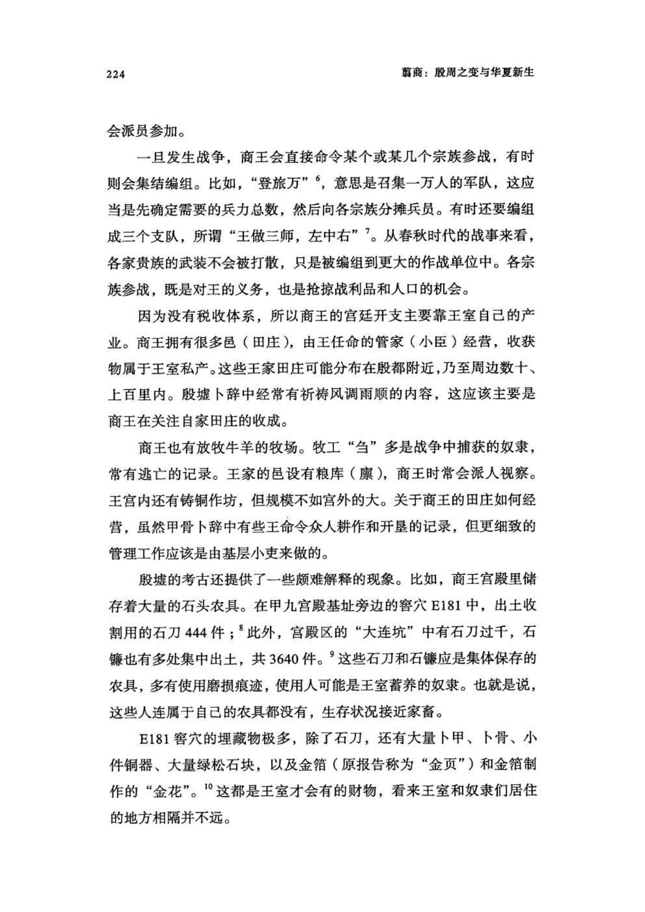
原书阅读器页 239原书物理 PDF 页 237印刷页 225
在王权和官僚体系主导的社会规则中，倘若某位商王突发奇想，要放弃传统的人祭宗教，就像郑州商城晚期曾经发生的一幕，那么，唯命是从的官僚体系是难以起到纠正作用的——它只能充当王的工具。幸运的是，郑州最发达的铸铜和制骨作坊都在城外，它们所代表的群体才是商人传统的保存者，并在内战中挫败了城内欲废人祭的“改革派”。商族传统精神离不开那些分散而自治的商人族邑，就像美国的白人精神离不开南方种植园的“红脖子”一样。
经过九世之乱，当盘庚迁都殷地，开始建造庞大的洹北商城，历史似乎要复制早商时代的循环。但武丁意识到了这种危险，转而放弃洹北商城的营建，让各商人族邑自行其是，自由发展，以维持商族旧有的小共同体社会结构和传统部族生活方式。由此，商人的宗教文化才能得到维护和传承。
盘龙城的腐化，以及它引发的郑州商城朝廷对传统宗教的背叛，是武丁王的警钟。或者说，武丁的主要政策都源自对早商朝廷崩溃的反思。
哪怕获得了马车这种新的统治技术，武丁王也尽量把疆域保持在可控的安全规模内。过大的疆域会包含太多各色异族，而这会稀释商族人口，从而带来诸多风险。武丁虽然四面出击，开疆拓土，但他尽量稳定地推进商朝的势力范围，不做盘龙城那样遥远的跳棋式布局。王朝统治的异族不需要太多，关键是献给诸神的祭品要足够。
武丁的扩张战争总是伴随着大规模的人祭典礼。那些异族俘虏本可以作为劳作的奴隶，但人祭宗教是商王朝的精神支柱和商族获得诸神眷顾的根源，所以，舍弃一点现实的物质利益，也要取悦诸神，维护商文化的兴旺。
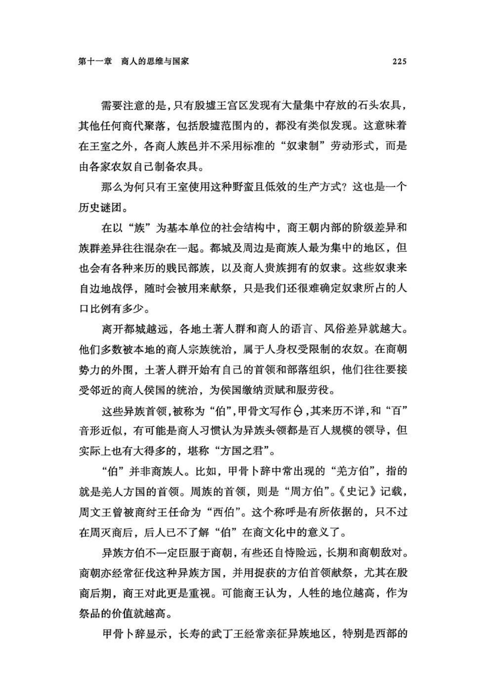
原书阅读器页 240原书物理 PDF 页 238印刷页 226
武丁王奠定了殷都的布局和之后二百年殷商文化的基调，其陵墓虽然已经被毁弃，无法确认，但他的夫人妇好的墓穴却被完整地发掘，由此，现代人亦可以见识商代王室生活之一斑。
注释
1《尚书•召诰》，它虽然是周人的文献，但体系是商人理念的延续。
2韩江苏、江林昌：《〈殷本纪〉订补与商史人物徵》，第312页。
3字形摹写及隶定来自李宗焜《甲骨文字编》，中华书局，2012年。
4郑若葵：《殷墟大邑商族邑布局初探》，《中原文物》1995年第3期。
5张光直：《商文明》。
6《英藏》150正：“辛巳卜，贞：登妇好三千，登旅万，呼伐羌。”
7《粹》597：“王乍（作）三自（师），右、中、左。”
8石璋如：《第七次殷墟发掘：E区工作报告》，《安阳发掘报告》第四期，1933年，第722页。
9何毓灵：《论殷墟手工业布局及其源流》，《考古》2019年第6期。
10石璋如：《第七次殷墟发掘：E区工作报告》，第722页。
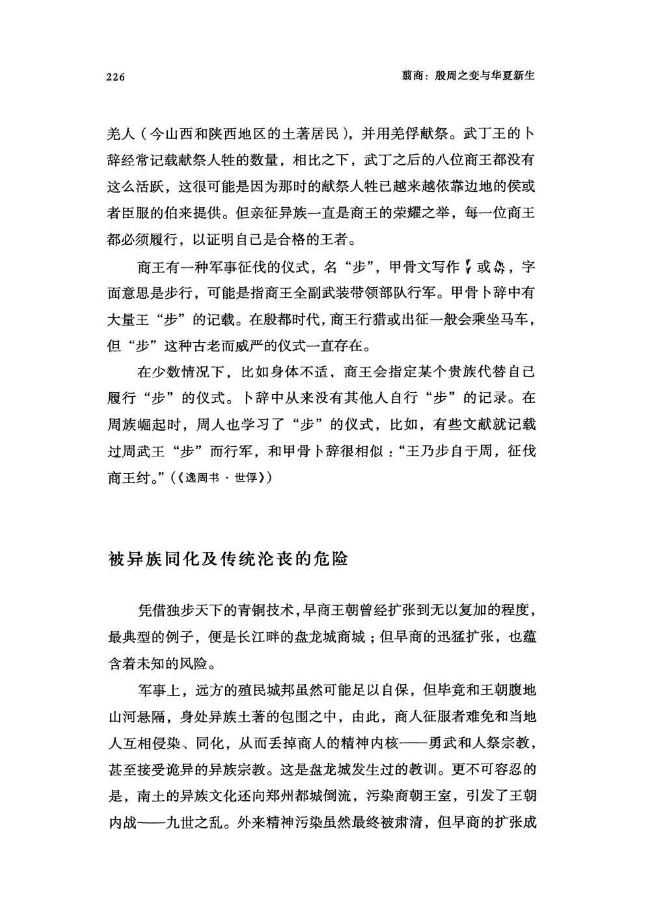
原书阅读器页 241原书物理 PDF 页 239印刷页 227
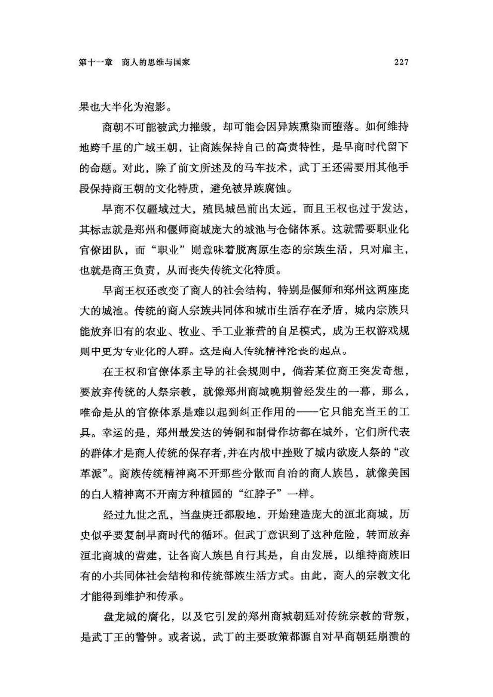
原书阅读器页 242原书物理 PDF 页 240印刷页 228
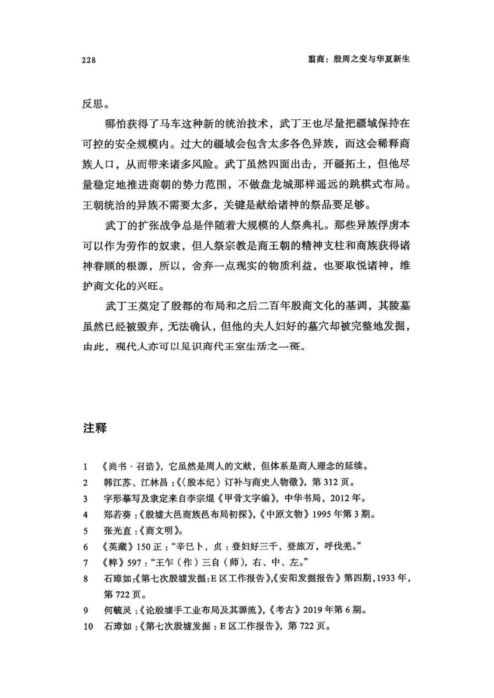
编辑札记
标记
先在正文中选择文字，再输入拼音；可用“拼音；简注”。